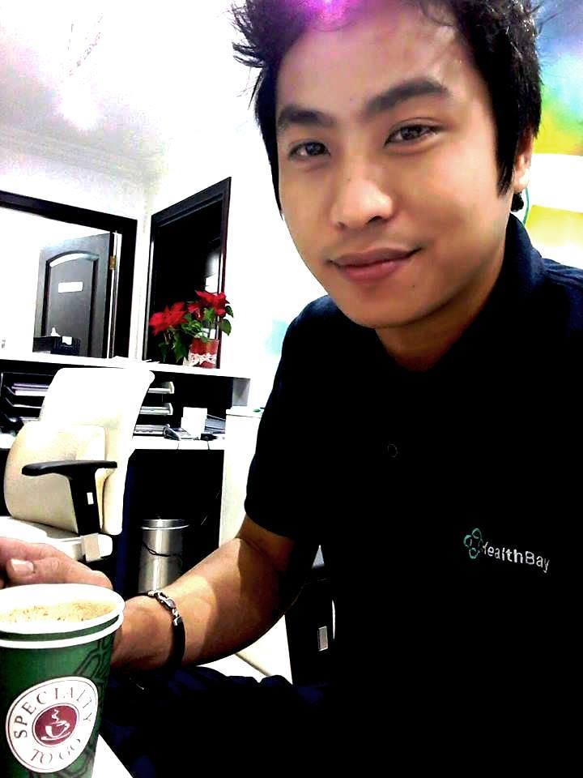

Get in Touch
About Me
Hello! My name is Geroniel Garcia Decano,I'm a dedicated professional with over seven years of experience in various administrative roles. In my previous role at HealthBay Polyclinic in Dubai, UAE, I handled a variety of tasks including billing, filing, and receptionist duties. I'm adept at managing multiple tasks simultaneously and have a keen eye for detail, which ensures accuracy in my work. I take pride in my strong administrative skills and my commitment to excellence. I bring a strong work ethic, a dedication to customer service, and a team-oriented mindset to everything I do. I'm always eager to learn and grow, and I look forward to new opportunities to further develop my skills and experiences. Thank you for taking the time to learn more about me!.
My Interests
I have a wide range of interests that span across various fields. In the realm of technology, I'm particularly interested in web development, programming, and AI. I enjoy the process of building websites from scratch and the problem-solving aspect of programming. The potential of AI and its applications in improving our lives fascinates me.
Beyond technology, I have a love for outdoor activities. Hiking and exploring nature trails offer a great way for me to unwind. I also enjoy reading books across different genres, with a special interest in science fiction and historical novels. Music is another passion of mine, and I love discovering new artists and genres.
Additionally, I'm always open to learning new things and expanding my horizons. I believe that life is a continuous learning journey, and I strive to learn something new every day.
Follow Me
Check out my Facebook page!